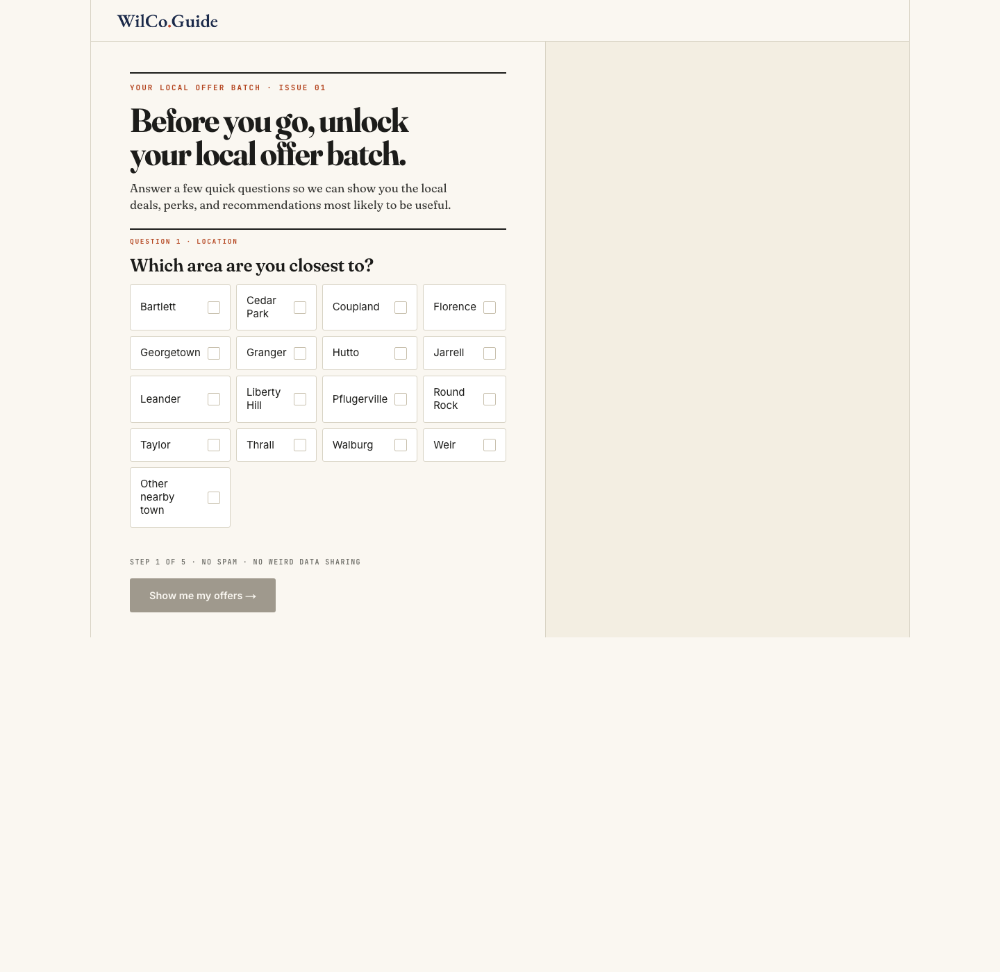
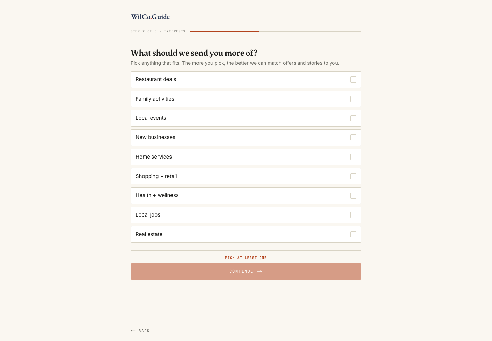

These are live renders of the actual built onboarding funnel, taken by running the real app locally against a real (dev-scoped) database with the ONBOARDING_FUNNEL_ENABLED flag forced on. Production currently shows a "launching soon" placeholder instead, since the flag defaults off there.

